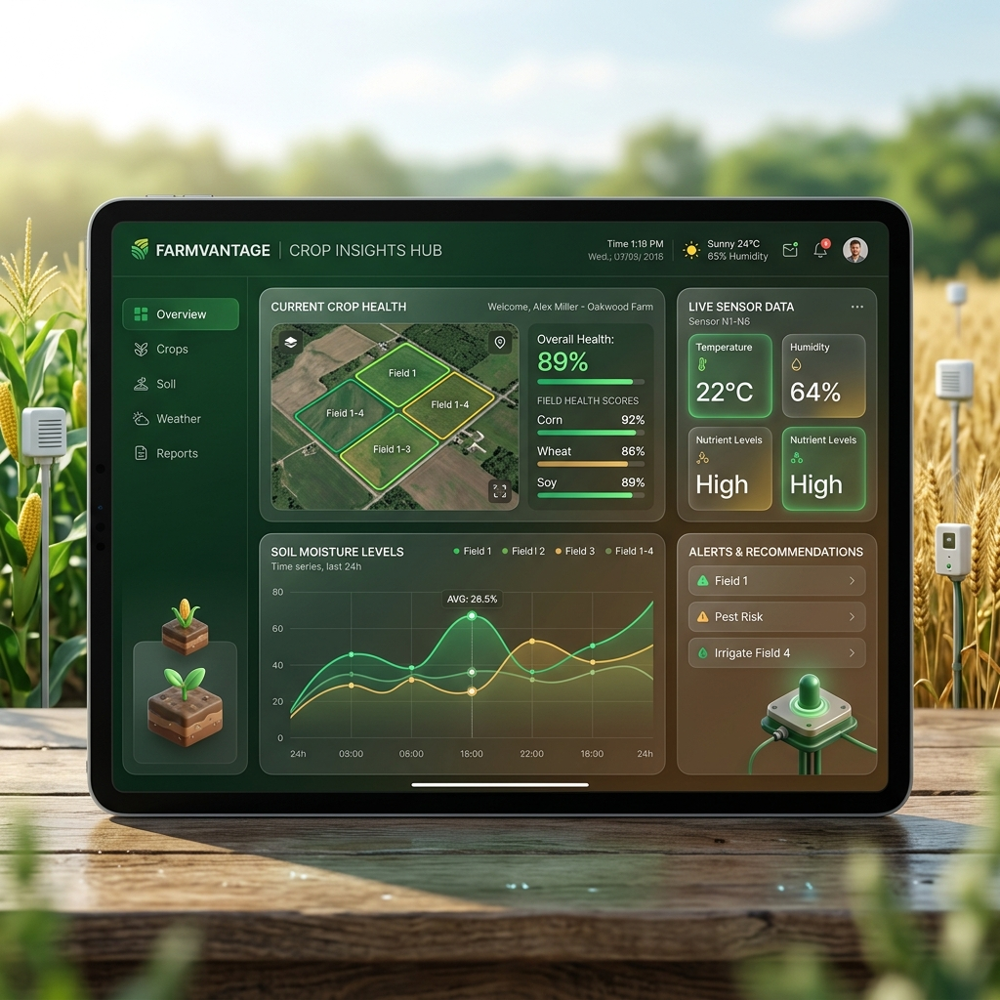

Preparing soil for the winter freeze
5 min read
Track your fields, monitor crop health, and protect your harvest — all in one visually stunning dashboard.
Draw boundaries and plan your fields down to the inch.
Maintain a digital history of every planted seed.
Early warnings against infestations directly to your phone.
Hyper-local forecasts tied to your specific farm grids.
Anticipate harvest dates with smart prediction algorithms.
Start managing your farm smarter in just three simple steps.
Everything you need to know, visible at a glance.

Visualize the exact stage of your crops and predict harvest times with stunning accuracy.
Turn a season of hard work into actionable spreadsheets and visual charts.
"AgroTrack completely changed how we manage our 2,000 acre soybean operation. The early pest warnings saved us thousands this spring."
Grow your farm, not your software expenses.
Perfect for small plots or hobbyists to get started.
For serious farmers demanding data-driven results.
Custom implementations for massive scale operations.